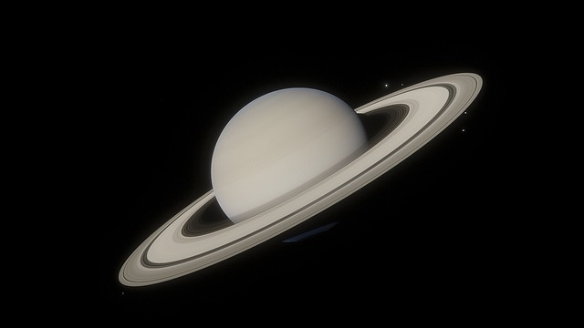
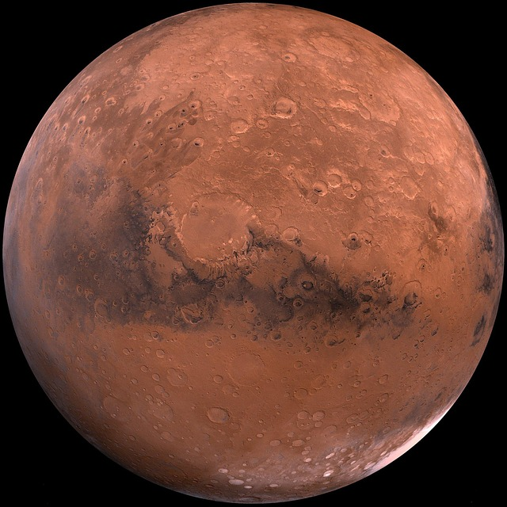

Saturno é o sexto planeta a partir do Sol e o segundo maior do Sistema Solar. Classificado como um gigante gasoso, é famoso por seu complexo sistema de anéis formados por gelo e poeira. Ele não possui superfície sólida e é composto essencialmente por hidrogênio e hélio.

Conhecido como o "Planeta Vermelho", Marte é o quarto planeta a partir do Sol e o segundo menor do Sistema Solar. Sua coloração característica vem da grande quantidade de óxido de ferro presente em sua superfície rochosa. É um dos mundos mais estudados e alvo de intensa exploração espacial.
